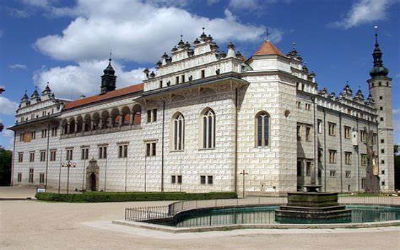

A arte no Renascimento
O movimento artístico que chamamos “Renascimento” nasceu na Itália, em Florença, nas primeiras décadas do século XV. Nos finais de 1400, tinha-se espalhado por toda a Itália.
Na primeira metade do século seguinte, quando Roma se sobrepunha a Florença como principal centro artístico, tinha alcançado os resultados mais clássicos.
Nessa mesma época, começou a difundir-se pelo resto da Europa, iniciando uma completa revolução artística, cujos efeitos perdurariam, com constantes acontecimentos, durante séculos, até quase o limiar da nossa época.
Este movimento, embora bastante complexo e variado internamente, estabeleceu princípios, métodos e, sobretudo, formas originais e típicas, mas comuns.
Tais formas provem de duas principais fontes: a reutilização, após um intervalo de quase um milênio, das formas características da arte clássica – arte grega e arte romana. E a aplicação de uma nova descoberta técnica: a perspectiva, conjunto de regras matemáticas e de desenho que permitem reproduzir sobre uma folha de papel ou sobre qualquer superfície plana, o aspecto real dos objetos.
Além de reviver a antiga cultura greco-romana, ocorreram nesse período muitos progressos e incontáveis realizações no campo das artes, da literatura e das ciências, que superaram a herança clássica. O ideal do humanismo foi, sem dúvida, o motel desse progresso e tornou-se o próprio espírito do Renascimento. Trata-se de uma volta deliberada, que propunha a ressurreição consciente (do renascimento) do passado, considerado agora como fonte de inspiração e modelo de civilização. Num sentido amplo, esse ideal pode ser entendido como a valorização do homem (Humanismo) e da natureza, em oposição ao divino e ao sobrenatural, conceitos que haviam impregnado a cultura da Idade Média.
Características gerais:
- Racionalidade;
- Dignidade do Ser Humano;
- Rigor Científico;
- Ideal Humanista;
- Reutilização das artes greco-romana.
A expansão marítima com a exploração de novos continentes e a pesquisa científica proclamavam a confiança no homem e, ao mesmo tempo, a Reforma Protestante diminuía o domínio da Igreja. O resultado foi que o estudo de Deus como Ser Supremo foi substituído pelo estudo do ser humano, inclusive com o estudo da anatomia. Desde retratos detalhistas, como a intensidade emocional e a iluminação surreal, a arte foi o meio de explorar todas as facetas da vida na terra.
Arquitetura
Na renascença italiana formada nos mesmos princípios da geometria harmoniosa em que se baseavam a pintura e a escultura, a arquitetura recuperou o esplendor da Roma Antiga.
Os arquitetos renascentistas mais notáveis foram Leon Battista Alberti, Filippo Brunelleschi, Donato Bramante, Andrea Palladio e Michelangelo Buonarotti.
Alberti (1404-72) escritor, pintor, escultor e arquiteto, foi o maior teórico da Renascença e deixou tratados de pintura, escultura e arquitetura. Ele menosprezava o objetivo religioso da arte e propunha que os artistas buscassem no estudo das ciências, como a história, a poesia e a matemática, os fundamentos de seu trabalho. Alberti escreveu o primeiro manual sistematizado de perspectiva, oferecendo aos escultores as normas das proporções humanas ideais.
Outro renascentista de múltiplos talentos foi Brunelleschi (1377-1446). Excelente ourives, escultor, matemático, relojoeiro e arquiteto, ele é mais conhecido, porém, como o pai da engenharia moderna. Brunelleschi não só descobriu a perspectiva matemática como lançou o projeto da igreja em plano central, que veio substituir a basílica medieval. Somente ele foi capaz de construir o domo da Catedral de Florença, chamada então da oitava maravilha do mundo. Tal técnica constitui em construir duas células, uma apoiando a outra, encimadas por uma claraboia estabilizando o conjunto. No projeto da Capela Pazzi, em Florença, Brunelleschi utilizou motivos clássicos na fachada, ilustrando a retomada das formas romanas e a ênfase renascentista na simetria e na regularidade.
Em 1502, Bramante (1444-1514) construiu o Tempietto (Pequeno Templo) em Roma, no local onde São Pedro foi crucificado. Embora pequeno, é protótipo perfeito da igreja com plano central encimado por domo, expressando os ideias renascentistas de ordem, simplicidade e proporções harmoniosas.
Famoso por suas vilas e seus palácios, Palladio (1508-80) teve enorme influência sobre os séculos posteriores através do seu tratado Quatro Livros de Arquitetura. Pioneiros do neoclássico se basearam no manual de Palladio. A “Villa Rotonda” incorporou detalhes gregos e romanos, como pórticos, colunas jônicas, domo plano, como o do Panteon, e aposentos dispostos simetricamente em torno de uma rotonda central.
Destaca-se também, Michelangelo Buonarotti (1475-1564) que em seus últimos anos dedicou-se à arquitetura, supervisionando a reconstrução da Basílica de São Pedro, em Roma. Acreditava que “os membros da arquitetura são derivados dos membros humanos”. As unidades arquitetônicas deveriam cercar simetricamente um eixo central vertical, assim com braços e pernas flanqueiam o tronco humano. Outro exemplo desse estilo inovador é a Colina Capitolina em Roma, o primeiro grande centro cívico da Renascença. Quebrou as normas renascentistas ao desenhar essa praça com ovais interligados e variações do ângulo reto.Sendo um dos percursores do Maneirismo.
Na arquitetura renascentista, a ocupação do espaço pelo edifício baseia-se em relações matemáticas estabelecidas de tal forma que o observador possa compreender a lei que o organiza de qualquer ponto em que se coloque.
“Já não é o edifício que possui o homem, mas este que, aprendendo a lei simples do espaço, possui o segredo do edifício”. (Bruno Zevi, Saber Ver a Arquitetura)
As principais características da arquitetura renascentista são:
- Ordens Arquitetônicas;
- Arcos de Volta-Perfeita;
- Simplicidade na construção;
- A escultura e a pintura se desprendem da arquitetura e passam a ser autônomas;
- Construções: palácios, igrejas, vilas (casa de descanso fora da cidade), fortalezas (funções militares) e planejamento urbanístico.
Pintura
Talvez nenhuma época artística tenha sido igualmente rica e tão talentosa com grandes pintores como o Renascimento.
Piero dela Francesca, Fra Angelico, Botticelli, Mantegna, Leonardo da Vinci, Michelangelo, Antononello da Messina, isto para citar só alguns. E depois, Masaccio, Perugino, o supremo Rafael, os Bellini, Giorgione, Ticiano, Paolo Uccello, Lucas Signorelli, os dois Lippi, Ghirlandaio, Carpaccio, Cosmè Tura. Qualquer um deles bastaria para nobilizar um período e uma nação. Mas, todos eles viveram no mesmo país e na mesma época, ou quase.
As principais características da pintura são:
- Perspectiva: arte de figura, no desenho ou pintura, as diversas distâncias e proporções que têm entre si os objetos vistos à distância, segundo os princípios da matemática e da geometria;
- Uso do claro-escuro: pintar algumas áreas iluminadas e outras na sombra, esse jogo de contrastes reforça a sugestão de volume dos corpos;
- Realismo: o artista do Renascimento não vê mais o homem como simples observador do mundo que expressa a grandeza de Deus, mas como a expressão mais grandiosa do próprio Deus. E o mundo é pensado como uma realidade a ser compreendida cientificamente, e não apenas admirada; Inicia-se o uso da tela e da tinta à óleo;
- Tanto a pintura como a escultura que antes apareciam quase que exclusivamente como detalhes de obras arquitetônicas, tornam-se manifestações independentes; Surgimento de artistas com um estilo pessoal, diferente dos demais, já que o período é marcado pelo ideal de liberdade e, consequentemente, pelo individualismo.
Vamos comentar brevemente os mais conhecidos pintores desse período:
Giotto di Bondone (c.1267-1337)
Mais conhecido simplesmente por Giotto, pintor e arquiteto italiano. Nasceu perto de Florença, foi aluno do mestre Cimabue. É conhecido como fundador da arte renascentista. O impressionante realismo e o poder dramático de suas obras constituíram-se numa revelação para seus contemporâneos, anunciando uma nova era no desenvolvimento da pintura. Considerado o elo entre as pinturas renascentista, medieval e bizantina. A característica principal do seu trabalho é a identificação da figura dos santos como seres humanos de aparência comum. Esses santos com ar humanizado eram os mais importantes das cenas que pintava, ocupando sempre posição de destaque na pintura. Assim, a pintura de Giotto vem ao encontro de uma visão humanista do mundo, muito própria do Renascimento.
Leonardo da Vinci (1452-1519)
Foi o artista que mais perto chegou do ideal “homem da Renascença”, que significa um indivíduo de talentos múltiplos, que irradiava saber. Tinha múltiplos talentos, deixou cadernos e mais cadernos com suas pesquisas e estudos. Possuía grande curiosidade e vontade de voar como os pássaros. Essa busca constante por entender todo o “mecanismo” que o cercava, não deixou grande quantidade de obras na pintura, mas é incontestável a sua genialidade. Dominou com sabedoria o jogo expressivo de luz e sombra, gerador de uma atmosfera que parte da realidade, estimulando a imaginação do observador. Foi possuidor de um espírito versátil que o tornou capaz de pesquisar e realizar trabalhos em diversos campos do conhecimento humano.
Michelangelo Buonarotti (1475-1564)
Foi o maior contribuinte para elevar o status da atividade do artista. Acreditando que a criatividade era uma inspiração divina, quebrou todas as normas. Os admiradores se referiam a ele como o “Divino Michelangelo”, mas o preço da glória foi a solidão. Entre 1508 e 1512 trabalhou na pintura do teto da Capela Sistina, no Vaticano. Para essa capela, concebeu e realizou grande número de cenas do Antigo Testamento. Dentre tantas que expressam a genialidade do artista, uma particularmente representativa é a “Criação do Homem” e o afresco “O Juízo Final”, que foi concluído 29 anos depois da pintura do teto, e essa pintura impressiona pela atmosfera sinistra.
Rafael Sanzio (1483-1520)
Foi, dentre as maiores figuras da escola da Alta Renascença (Leonardo, Michelangelo e Rafael) eleito o mais popular. Enquanto os outros dois eram reverenciados, Rafael era adorado. Um contemporâneo dos três, chamado Vasari, que escreveu a primeira história da arte, afirmou que Rafael era “tão amável e bondoso que até os animais o amavam”. O pai de Rafael, um pintor menor, ensinou ao precoce filho os rudimentos da pintura. Aos 17 anos de idade, Rafael era considerado um mestre independente. Aos 26 anos, chamado a Roma pelo Papa para decorar os aposentos do Vaticano, ele pintou os afrescos, com ajuda de 50 discípulos, no mesmo ano que Michelangelo terminou o teto da Capela Sistina. “Tudo que ele sabe, aprendeu comigo” disse Michelangelo. De Leonardo, ele assimilou a composição piramidal e aprendeu a modelar rostos em luz e sombra (chiaroscuro). De Michelangelo, Rafael adotou as figuras dinâmicas, de corpo inteiro e a pose de “contraposto”. Foi o grande pintor das Madonas. Morreu com 37 anos e toda a corte “mergulhou em luto” segundo Vasari.
Sandro Botticelli (1445-1510)
Foi um dos mais importantes artistas do Renascimento Cultural Italiano. Desde jovem, dedicou-se à pintura mostrando grande talento para as artes. Em suas obras seguiu temáticas religiosas e mitológicas. Resgatou, de forma brilhante, vários aspectos culturais e artísticos das civilizações grega e romana. Chegou também a fazer retratos de pessoas famosas da época, como príncipes, integrantes da burguesia e nobres. As pinturas de Botticelli são marcadas por um forte realismo, movimentos suaves e cores vivas. Para ele, a beleza estava associada ao ideal cristão. Por isso, as figuras humanas de seus quadros são belas porque manifestam a graça divina, e, ao mesmo tempo, melancólicas porque supõem que perderam esse dom de Deus. Uma de suas obras mais conhecidas, até os dias de hoje é “O Nascimento de Vênus”, que o pintor fez no ano de 1485. Nesta linda obra, observamos a valorização das forças da natureza, o realismo e o resgate da mitologia.
Ticiano Vecellio (c.1473-90-1576)
Como seus contemporâneos venezianos, dominou o mundo da pintura durante sessenta anos, usava cores fortes como principal meio expressivo. Primeiro pintava a tela de vermelho, para dar calor ao quadro, depois pintava o fundo e as figuras em matizes vividos e acentuava as tonalidades usando trinta a quarenta camadas vidradas. Esse trabalhoso método possibilitava uma pintura convincente de qualquer textura, do metal polido ao brilho da seda, de cabelos louro-dourados à pele cálida. Sua produção inclui cenas religiosas carregadas de emoção, episódios mitológicos pulsantes de sensualidade e expressivos retratos, ,não raro tendo ao fundo paisagens banhadas e luz. Assim como Michelangelo, Ticiano foi um dos percursores do movimento Maneirismo.
Piero Della Francesca (c.1415-1492)
Pintor, matemático e teórico da arte. Apenas no século 20 a pureza austera de suas formas e o completo domínio da luz e da cor passaram a ser devidamente apreciados. A demora para que ele subisse à galeria dos grandes artistas reflete a relativa obscuridade de sua carreira. Passou grande parte da vida na pequena Borgo San Sepolcro, cidade toscana, e na vizinha Arezzo. E, apesar de ter transitado por eminentes cortes renascentistas, nunca gozou do mesmo prestígio artístico de seus ilustres contemporâneos. Hoje, no entanto, os afrescos de Arezzo são reconhecidos como um dos grandes tesouros da arte.